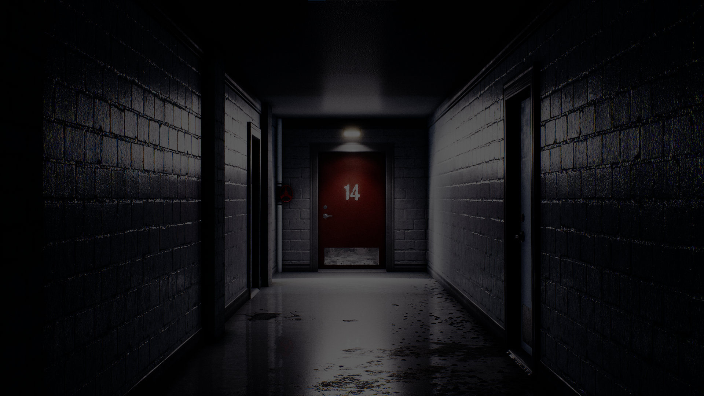
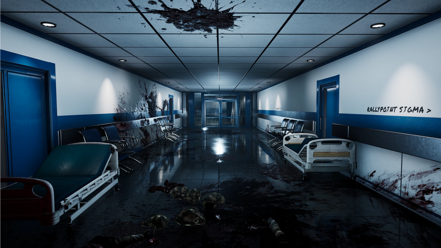
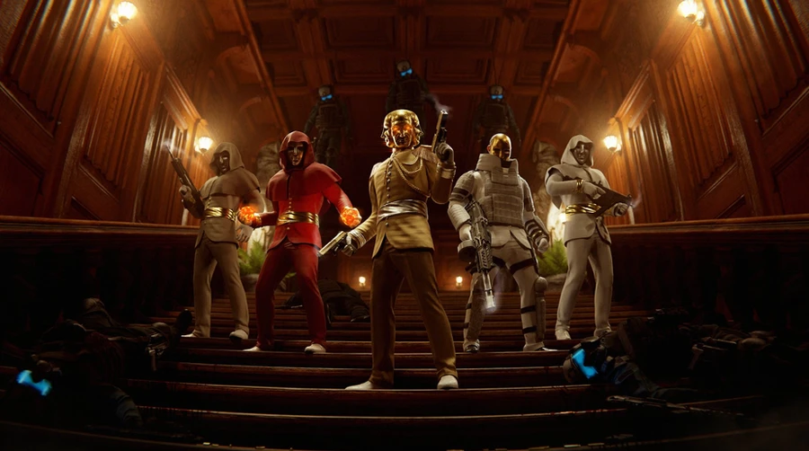
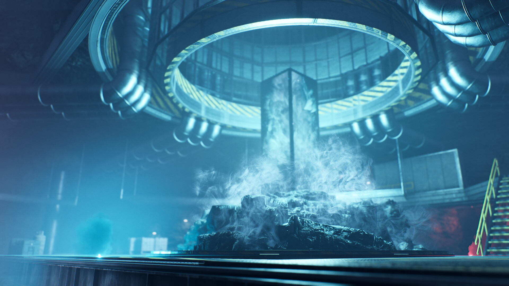
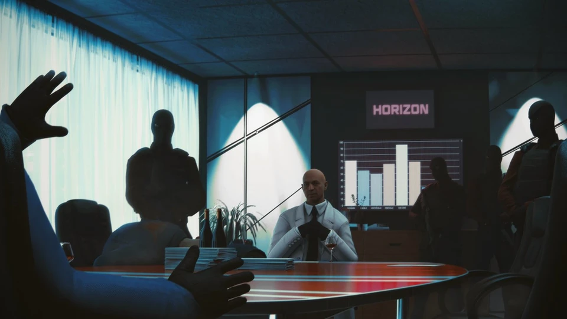
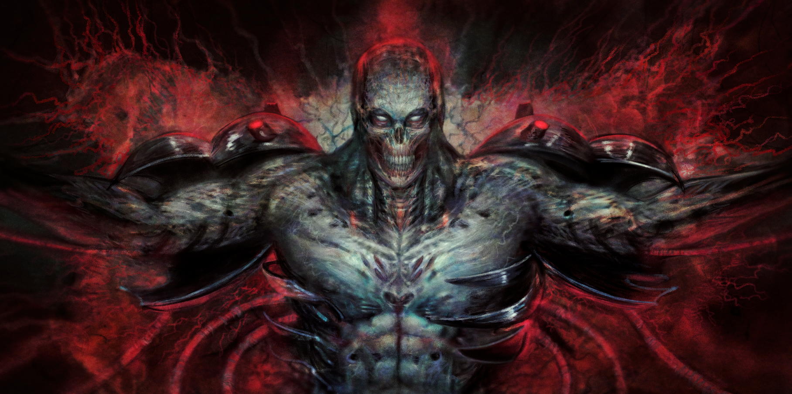

Na tej stronie pokrótce opisze fabułę z gry Trepang
Wszystko co najważniesze

Placówka 14

Instytut Pandory

Zamek Jorvik

Placówka 83

Siedziba Horizon

Placówka Syndykatu
Placówka 14
Prolog
Zaczynasz związany na krześle wpatrzony w telewizor który hipnotyzuje twoją postac aż do momentu gdy zamaskowny
żołnież w niego strzela. Wymykasz sie ze swojej celi i przekradasz się do pokoju z monitoringiem gdzie znajdujesz broń, klucz do kajdanek i
ciała strażników. W placówce wybucha alarm, przez intekom wzywane są wszystkie jednoski do zatrzymania cie. Określają cię wtedy Obiektem 106.
Przebijasz sie do labolatorium gdzie znajdujesz ciało człowieka który cię uwolnił, popełnił samobójstwo. Znajdujesz przy nim złoty token z wyrytymi
na nim literami CV - 105. Po dojściu do hangaru walczysz z kilkoma składami jednostek korporacji Horizon. Po ich pokonaniu i wyjściu z placówki
czekają na ciebie jednostki Syndykatu, tajemniczej organizacji walczącej z megakorporacją. Nie strzelają do ciebie, zamiast tego lecisz z nimi
do ich placówki.
Siedziba Syndykatu
Od tego momentu pracujesz dla Syndykatu a ich siedziba staje sie twoją bazą wypadową do której wracasz między kolejnymi misjami
Los Angeles
We had such a great time in LA!
Chicago
Thank you, Chicago!
New York
We love the Big Apple!
Instytut Pandory
W kolejności chronologicznej (na tyle na ile się da)
Zamek Jorvik
W kolejności chronologicznej (na tyle na ile się da)
Placówka 83
W kolejności chronologicznej (na tyle na ile się da)
Siedziba Horizon
W kolejności chronologicznej (na tyle na ile się da)
TF27 HQ
Zdrada Syndykatu
Po powrocie z siedziby Horizon gdy próbujesz wejść z powrotem do placówki Syndykatu zostajesz ogłuszony. Budzisz
się przywiązany do stołu gdzie trwają przygotowania do spalenia twojego ciała. Syndykat nie przewidział że się obudzisz więc łatwo obezwładniasz
strażników. Zostaje wszczęty alarm a ty zaczynasz przebijać się do bomby termojądrowej placówki. Zarząd panikuje i rozkazuje natychmiastowo zacząć kolejny
cykl, czyli szybko stworzyć kolejnego klona superżołnieża do wyeliminowania ciebie.
Zwykłe zakończenie (złe)
Po pokonaniu Podmiotu 107, 106 detonuje bombe termojądrową znajdują się w placówce poświęcają się i niszcząc
cały odłamek Syndykatu. To zakończenie jest uważane za złe ponieważ najprawdopodobniej Syndykat ma wiele innych placówek podobnych
do tej którą zniszczyłeś więc może zacząć od nowa i z czasem odbudować się i wyeliminować błąd który sprawił że 106 mógł się im sprzeciwić
Sekretne zakończenie (dobre)
Podczas głównych misji można było znaleźć łącznie 7 dronów które dawały ci dostęp do wiadomości.
Oto one w kolejności ich dostania:
1.The cycle begins again,
capture means you will be forced to complete your Original Mission
Tłumaczenie: Cykl zaczyna się od nowa, przechwycenie oznacza, że będziesz zmuszony ukończyć swoją pierwotną misję
2.It was never going to be a rescue mission...
Tłumaczenie: To nigdy nie miała byc misja ratunkowa...
3.Deploying Subject 106 ag$%ins *@^je$# $@ is ill-advised There's a possibility...[MESSEGE CORRUPTED]
Tłumaczenie: Wysłanie Podmiotu 106 ag$%ins *@^je$# $@ jest nie zalecane. Istnieje możliwość...[WIADOMOŚĆ USZKODZONA]
4.She's not telling you everything.
Tłumaczenie: Ona nie mówi ci wszystkiego (w odniesieniu do kierowniczki placówki która kieruje tobą przez wszystkie misje)
5.Your mission is nearing completion.
Will it end on your terms? Or theirs?
Tłumaczenie: Twoja misja dobiega końca. Czy zakończy się na Twoich warunkach? Albo ich?
6. .....high probability of cognitive dissonance if 106 becomes involved in phase 1.
Keep him in the underpass until phase 2 of the operation.
The cycle is nearly complete, see to it finished correctly this time.
Tłumaczenie: .....wysokie prawdopodobieństwo dysonansu poznawczego, jeśli 106 zostanie zaangażowany w fazę 1. Trzymaj go w przejściu podziemnym aż do drugiej fazy operacji. Cykl jest prawie ukończony, dopilnuj, aby tym razem zakończył się poprawnie.
7.THERE IS NO EXTRACTION
DESTROY THE FACILITY YOU WILL BE REMEMBERED
BREAK THE CYCLE
Tłumaczenie: ZNISZCZ PLACÓWKĘ BĘDZIESZ ZAPAMIĘTANY PRZERWIJ CYKL
W tym zakończeniu tak jak wcześniej 106 wysadza placówkę, jednak tym razem tuż przed śmiercią udaje mu się zgrac jego podświadomośc do systemu
Syndykatu. To zakończenie jest uważane za dobre ponieważ Syndykat nie da rady się odbudować nawet w innych miejscach jeśli każdy ich cykl
będzie się kończył sprzeciwem/buntem podmiotu.